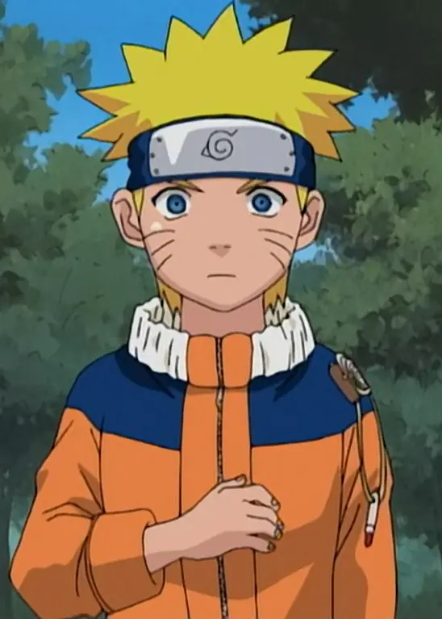
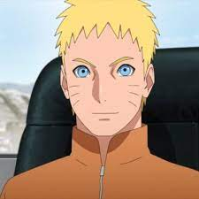

Welcome to Animania!
|  |  |
|  |  |
The Seventh Hokage
The seventh Hokage of the Hidden Leaf Village Naurto Uzamaki is the ultimate mascot for crunchyroll. Naruto is a powerful ninja with a raging fox spirit inside him as his partner, with him as the leader the leaf village has little to almost no worries.